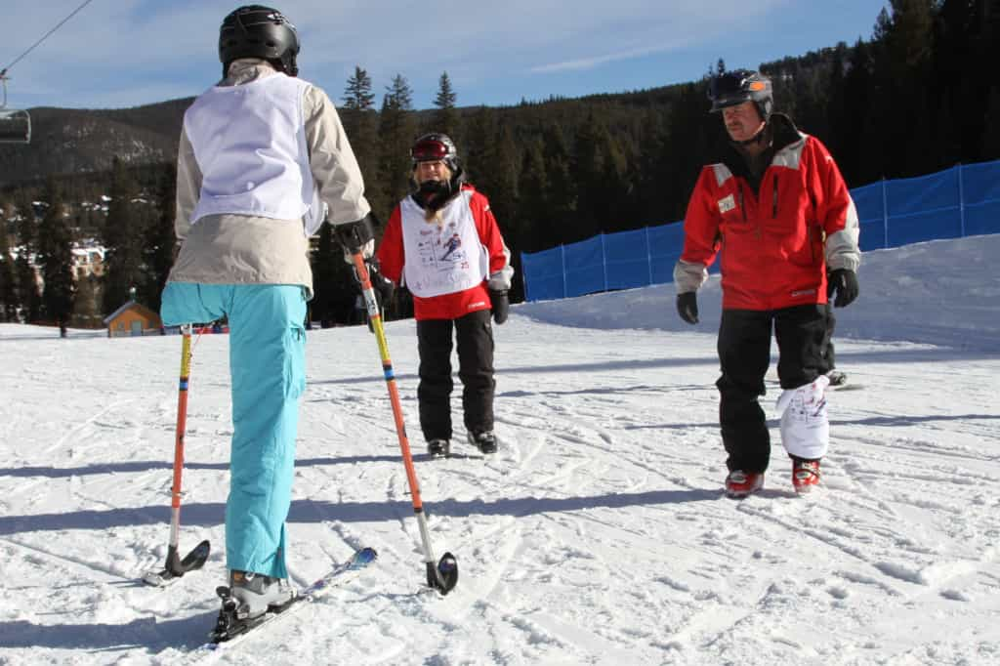
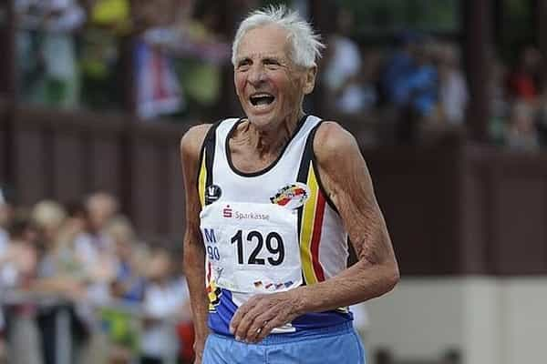

< < < Back
Why Aren’t Disabled Athletes Paid The Same As Normal Female Athletes? – Return Of Kings
Women’s sport has more than a few problems. In addition to the pathetic wrangling of female athletes for “equal pay,” despite having separate gender-based fields that spare women from being embarrassed by superior male players, feminists do not mention how calls for equality completely ignore the grossly inferior remuneration given to disabled, mature-age, and even youth competitors. So, using feminist and SJW logic, in advocating for so-called women’s equality in sport, leftists and self-aggrandizing female athletes have condoned and perpetuated discrimination against the disabled, older people, and the young.
During the recently ended French Open, the able-bodied women’s events for this tennis tournament featured a total prize pool of €14,712,000 (ca. US$16,700,000), pretty much half of the nearly €31,000,000 handed out across all parts of the tournament. This was nearly 70 times higher than the meager €217,000 given to wheelchair tennis players across both the male and female fields. But why? What happened to equal pay for equal work? If anyone seriously suggesting that wheelchair athletes do not work as hard as female able-bodied athletes?
Here’s the catch, though: able-bodied women will never support equal pay for disabled athletes. Because of the number of very high-profile global or semi-global sports, mixed in with swathes of internationally-recognized athletes, it could be said we have reached a dead-end for sport-related financial expansion. If not, then at the very least the rate of expansion is slowing. If wheelchair-bound and other disabled athletes start to get the attention of their able-bodied counterparts, the able-bodied women lose and will have to sacrifice much of their own ignominiously-acquired earnings. They clearly sensed this from the start, as they never called for “equal pay” for the disabled when they were demanding the same as the able-bodied men.
The shifting sands trying to justify “equal pay” for women only bolster the arguments for paying disabled athletes the same

Why not pay this person the same as an able-bodied athlete? Or pay the same to a masters’ level (35-40+) or youth competitor?
The first “pillar” used to justify equal pay for women who do not compete in the same competitive field as men was (and remains) that “both sexes are equal, how can we pay them differently?” This completely sidesteps why women are playing amongst themselves, but it is the point that feminists and female athletes have banged on about for years. The contrived “Battle of the Sexes” tennis match, where still-playing female player Billie Jean King beat a long-retired 55-year-old man with a distinct paunch, was used to try and press this point of so-called equality. And here’s my own questions about equality: “Are disabled people not equal, too? If not, why are we paying them less?”
A second justification is the idea of effort. Women supposedly work as hard as men and this means they should be compensated equally. Yet a few major roadblocks emerge: we have no idea what the average male vs. female athlete level of effort is, effort can vary between male athletes and between female athletes and not just between genders, and effort itself is not directly rewarded in any sporting competition in the world. And if effort is a benchmark for financial reward, then disabled athletes should be paid the most of all. Instead of wallowing in their disability, they have gone out in the world, traveled with severe physical impediments, and chased a dream that currently offers little financial security.
The third pillar is a mass bombardment of popular media with exhortations that the public watch female sports, especially increasingly politically correct ones like soccer. If you don’t, you are in possession of some significant chauvinistic moral failings. Though the propaganda (and it is propaganda) is unmistaken, it usually stops short of explicitly telling viewers to support female athletes in the same way as men. When the popular media tries this with disabled athletes, the calls for viewership and other backing seem more patronizing and forced, as if the outlets just have to.
Finally, the concept of revenue comes into play. Feminists and their enablers are hoping to crank up the popular media propaganda to such a point that financial support for women’s sports equals men’s and they can say both genders deserve the same pay, despite grossly inferior female physical output. Of course, this outcome would be artificial. It is a method that relies on indoctrination and shaming of those who find women’s sports less appealing, rather than a proper appreciation for the merits of male and female sport compared side-by-side. At present, a mixing-and-matching process is going on, whereby the excuse fluctuates from the equality argument back to the revenue argument. There is no similar dexterity in advocating for disabled athletes, unsurprisingly.
All manner of “equal pay” permutations can be discussed

Why doesn’t he get equal pay compared to the able-bodied, adult-but-not-middle-aged women?
We have discussed disabled athletes here, but what about masters’ level (35-40+) competitors? Most notably when people hit their 60s, participating in sports is a choice we should be rewarding, not ignoring, It is amusing how feminists are willing to dismiss physical aptitude differences between men and women and demand equal pay in sports for separate gender-based fields, but act as if older athletes did not deserve equal pay because their physical abilities are in general decline. The same can be said of juvenile athletes, who frequently earn close to nothing, despite boys’ teams having beaten the women’s adult football teams of both the United States and Australia. Age cuts across the skills barrier as much as gender.
Sadly, you could bet your final dollar that the madness of “equal pay” will continue in its closed-off, selfish form. For the record, I am not for equal pay for disabled athletes. It is unfeasible and would, as I have suggested, necessitate a multitude of other fields divided by gender, age and level of disability, each of them entitled to “equal pay.” At the same time, however, female athletes’ own arguments require them to support equal pay for disabled athletes, not that they will.
It is much easier for feminists to pretend to stand for an ideal than to actually stand for it when it does not benefit them.
Read More: Female Danish Athletes Diminish Their Own Championship Victory By Taking Nude Photos